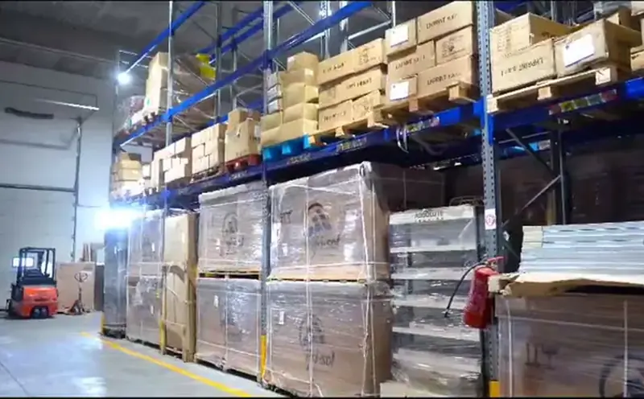

In short: fulfillment in Morocco is billed per line item: storage, pick and pack, delivery, plus packaging, COD handling and returns. Sample Tecxodus rates: MAD 3 per pallet per day, MAD 0.50 per order line, MAD 30 per delivery anywhere in Morocco. A delivered order costs about MAD 32, over 90% of which is delivery.
Cost lines
| Line | Billing unit | Tecxodus sample rate | Market benchmark |
|---|---|---|---|
| Storage | pallet/day or m²/month | MAD 3 per pallet per day (≈ MAD 90/month) | MAD 40–80 per m² per month |
| Pick and pack | order line or parcel | MAD 0.50 per line | MAD 5–15 per parcel |
| Delivery | delivered parcel | MAD 30 anywhere in Morocco | from MAD 20–25 in major cities |
| Packaging, COD handling, returns | parcel | market rates | varies by provider |
Benchmarks retrieved 18 Nov 2026: clarodigi.com, cathedis.ma, livo.ma. Tecxodus rates are examples, confirmed in each quote.
Three worked examples
| Small store | Established store | National brand | |
|---|---|---|---|
| Orders per month | 300 | 1,500 | 10,000 |
| Lines per order | 1.5 | 2 | 2.5 |
| Pallets stored | 3 | 20 | 120 |
| Storage | MAD 270 | MAD 1,800 | MAD 10,800 |
| Pick and pack | MAD 225 | MAD 1,500 | MAD 12,500 |
| Delivery | MAD 9,000 | MAD 45,000 | MAD 300,000 |
| Per order | MAD 31.65 | MAD 32.20 | MAD 32.33 |
The metric that matters: cost per paid order
With cash on delivery, some parcels are refused. For the established store, MAD 48,300 for 1,500 shipped orders becomes MAD 40.25 per paid order at a 20% refusal rate, and MAD 35.78 at 10%. Cutting refusals saves more than negotiating storage.
Comparison with Europe
A French e-commerce 3PL publishes, for example, €8 per pallet per month for storage and €1.20 to €7 per parcel for picking (jcd-logistique.fr, retrieved 18 Nov 2026). Moroccan storage is in the same range per pallet; picking is much cheaper. For a foreign brand selling in Morocco, this supports holding local stock rather than shipping from Europe.
Hidden costs to check in a quote
- fixed fees and monthly minimums;
- inbound handling per pallet or carton;
- packaging and consumables;
- COD handling fee and remittance frequency;
- return trip and inspection;
- store or marketplace integration;
- peak surcharges during Ramadan or Black Friday.
Get a quote on your volumes: e-commerce fulfillment in Morocco.
Frequently asked questions
How much does e-commerce fulfillment cost in Morocco?
With sample Tecxodus rates (MAD 3 per pallet per day, MAD 0.50 per order line, MAD 30 per delivery), about MAD 32 per delivered order before packaging and COD handling.
How much does storage cost in Morocco?
Sample Tecxodus rate: MAD 3 per pallet per day, about MAD 90 per month. Published market benchmark: MAD 40–80 per m² per month.
How much does delivery cost in Morocco?
Sample Tecxodus rate: MAD 30 anywhere in Morocco. Delivery companies advertise from MAD 20–25 in major cities.